%rip : 다음에 실행할 명령어 주소를 가리키는 레지스터 (general purpose 16개와 별개)
하드웨어는 연산이 signed인지 unsigned인지 모름 → 두 관점의 플래그를 다 세팅해 두고, 해석은 사용자(컴파일러)가 골라 씀
cmp/sub의 a − b는 내부적으로 a + (−b)로 계산 → 실제로 MSB에서 carry out이 나면 CF = 0, 안 나면 CF = 1
| 8bit 예시 | a + (~b+1) | carry out | CF | 의미 |
|---|---|---|---|---|
| 3 - 2 | 00000011 + 11111110 | 있음 | 0 | 3 ≥ 2 (unsigned) |
| 1 - 2 | 00000001 + 11111110 | 없음 | 1 | 1 < 2 (unsigned), 결과 11111111 = -1 |
1 − 2 : 0이 대부분인 두 수에서 결과가 전부 1 → MSB 위의 가상 자리에서 빌려온 것 → borrow → CF = 1
setl / jl의 조건은 SF만이 아니라 SF ^ OF
8bit: cmp $1, a (a = -128 = 10000000)
a - 1 = 01111111 (+127) SF = 0 OF = 1 CF = 0
setl = SF ^ OF = 1 → -128 < 1 맞게 판정(교수님은 "-256"이라고 말했지만 8bit 최소값은 -128)
test b, a : a & b를 계산해 SF, ZF만 세팅 (CF, OF는 0), 결과는 저장 안 함
testq %rax, %rax → 자기 자신과 AND → 0인지, 음수인지 확인setX : 조건 코드 조합의 결과(0/1)를 목적지 레지스터의 최하위 바이트 하나에만 씀
movzbl : 바이트를 32bit로 zero-extension
gt: # long gt(long x, long y) { return x > y; }
cmpq %rsi, %rdi # x:y (x - y로 플래그 세팅)
setg %al # x > y이면 al = 1
movzbl %al, %eax # 상위 비트 0으로 → rax = 0 또는 1
retjX : 조건 코드에 따라 다른 위치로 점프
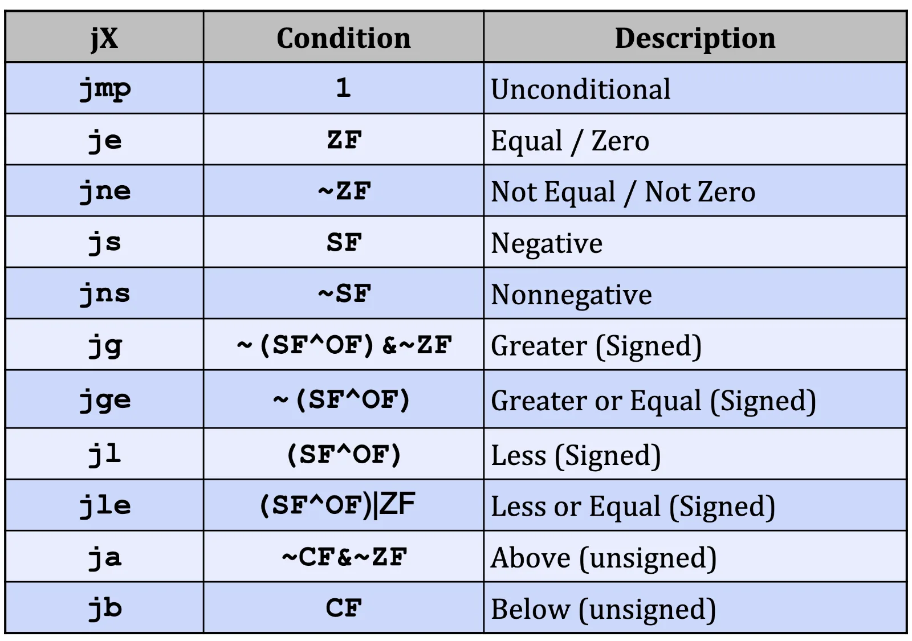
signed 비교 : jg, jge, jl, jle (SF ^ OF 사용)
unsigned 비교 : ja, jb (CF 사용)
gcc -Og -S -fno-if-conversion control.c
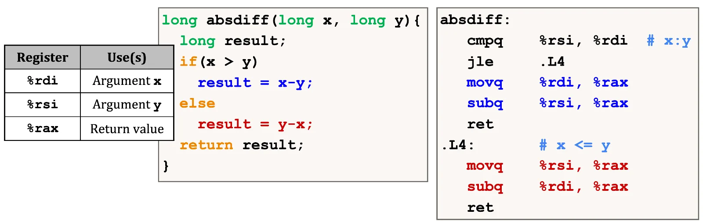
x는 %rdi, y는 %rsi, 반환값은 %rax
cmpq %rsi, %rdi → x − y로 플래그 세팅, jle .L4 → x ≤ y면 else 블록(.L4)으로 점프
subq %rsi, %rax = rax − rsi → destination − source를 destination에 저장 → x − y.L4 같은 label : 코드 안의 위치를 사람이 읽기 쉬운 이름으로 붙인 것, 나중에 어셈블러가 실제 주소로 바꿔줌
goto : label 위치로 바로 점프 → 어셈블리 분기를 C로 추상화한 형태
long absdiff_j(long x, long y) {
long result;
int ntest = x <= y;
if (ntest) goto Else;
result = x - y;
return result;
Else:
result = y - x;
return result;
}val = test ? then_expr : else_expr;
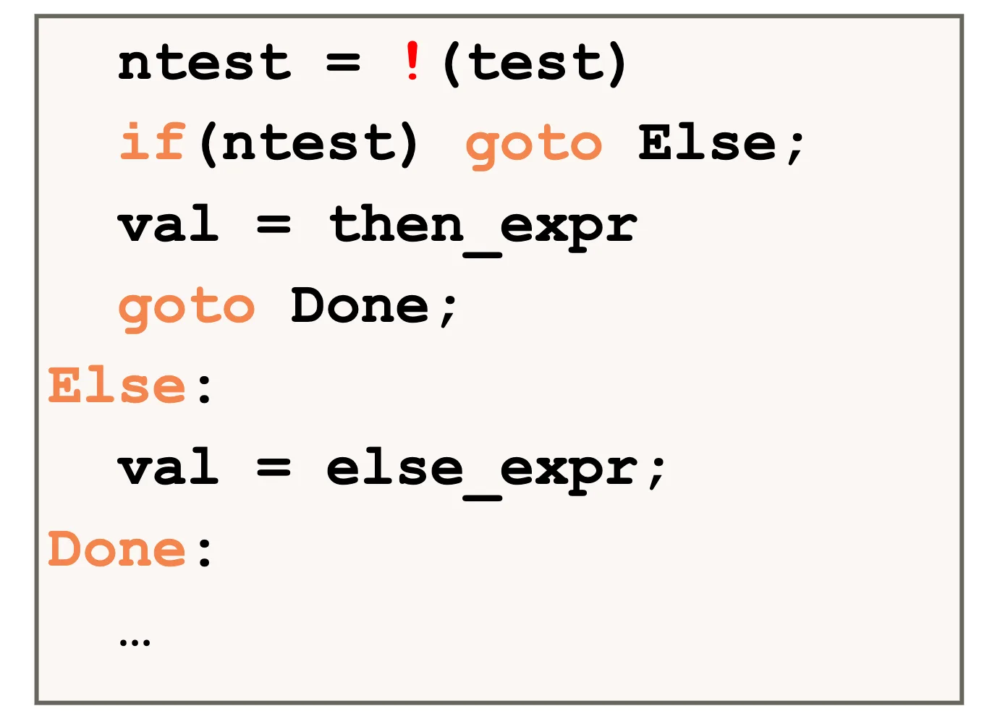
then과 else를 별도 코드 영역으로 만들고 조건에 맞는 쪽만 실행
absdiff 예시는 각 블록에서 바로 return했지만, 실제로는 if/else 뒤에 코드가 이어지므로 then 끝에서 goto Done으로 합류 지점에 점프
명령어 하나는 여러 단계로 나뉨 (예 : 명령 해석 → 데이터 읽기 → 연산 → 메모리 쓰기)
분기는 파이프라인을 깨뜨림
conditional move : if (test) dst = src 를 명령어 하나로 수행, 1995년 이후 x86에서 지원
then과 else를 둘 다 미리 계산해 "양손에 들고" 있다가, 플래그를 보고 하나를 고름 → 점프 없음
result = then_expr;
eval = else_expr;
nt = !(test);
if (nt) result = eval;
return result;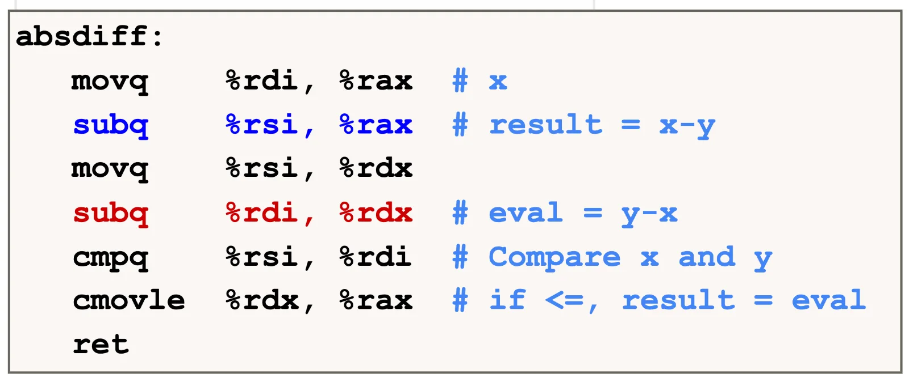
rax = x − y, rdx = y − x를 다 계산한 뒤 cmpq로 비교
cmovle %rdx, %rax : x ≤ y면 rax를 rdx 값으로 덮어씀, 아니면 rax(x − y) 그대로 반환장점 : 점프가 없어 파이프라인 손실이 없음
단점 : 둘 중 하나만 필요한데 둘 다 계산함 → 어느 쪽이 나은지는 then/else 계산이 얼마나 가벼운지에 달림
GCC는 안전하다고 확신할 때만 cmov를 씀
비싼 계산 : val = test(x) ? hard1(x) : hard2(x); → 둘 다 계산하므로 손해, 계산이 아주 간단할 때만 이득
위험한 계산 : val = p ? *p : 0; → p가 null이어도 *p를 계산해버림 → null pointer 역참조
부작용 있는 계산 : val = x > 0 ? x*=7 : x+=3; → 둘 다 실행되면 x가 두 번 바뀌어 결과가 틀림 → 불가능
결론 : 컴파일러는 성능, 안전성, 부작용을 다 따져서 필요할 때만 변환함
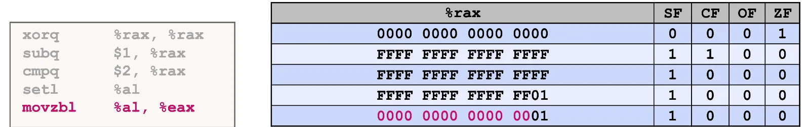
xorq %rax, %rax → 자기 자신과 XOR = 0 → ZF = 1
subq $1, %rax → 0 − 1 = −1 = FFFF…FFFF
cmpq $2, %rax → −1 − 2 = −3 계산 (rax는 안 바뀜)
setl %al → SF ^ OF = 1 → al = 01 (−1 < 2 맞음), 나머지 바이트는 그대로 FFFF…FF01
movzbl %al, %eax → 상위 비트 전부 0 → rax = 1
setl, movzbl은 조건 코드를 바꾸지 않음 → 플래그는 끝까지 SF=1 CF=0 OF=0 ZF=0
do-while은 body를 최소 한 번 실행한 뒤 조건 검사, while은 조건부터 검사
goto 버전 : Loop: body; if (test) goto Loop;
예제 pcount : x의 1 비트 개수 세기 (population count)
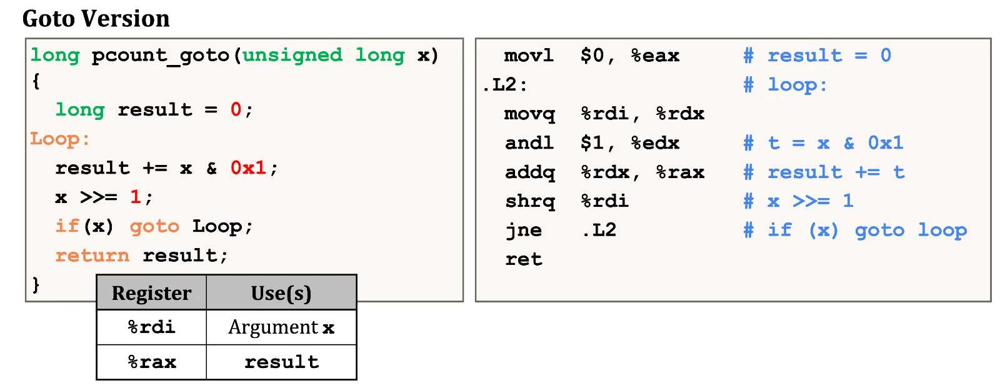
movl $0, %eax → result = 0 (반환값이라 ax 계열 사용)
.L2가 goto 버전의 Loop label에 대응
goto 버전을 거치면 어셈블리 매핑이 아주 깔끔하게 보임 (교재 저자의 설명 방식)
goto Test;
Loop:
body
Test:
if (test) goto Loop;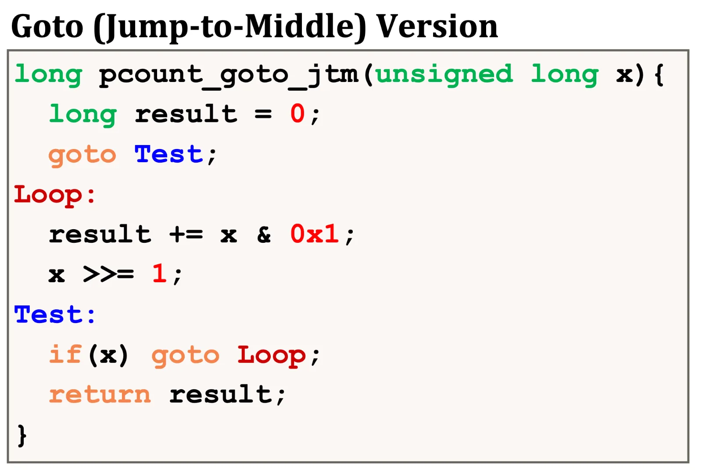
조건을 먼저 검사해야 하므로 처음에 Test로 무조건 점프 → 참이면 Loop로 돌아가 body 실행, 거짓이면 그대로 빠져나감
if (!test) goto Done;
Loop:
body
if (test) goto Loop;
Done: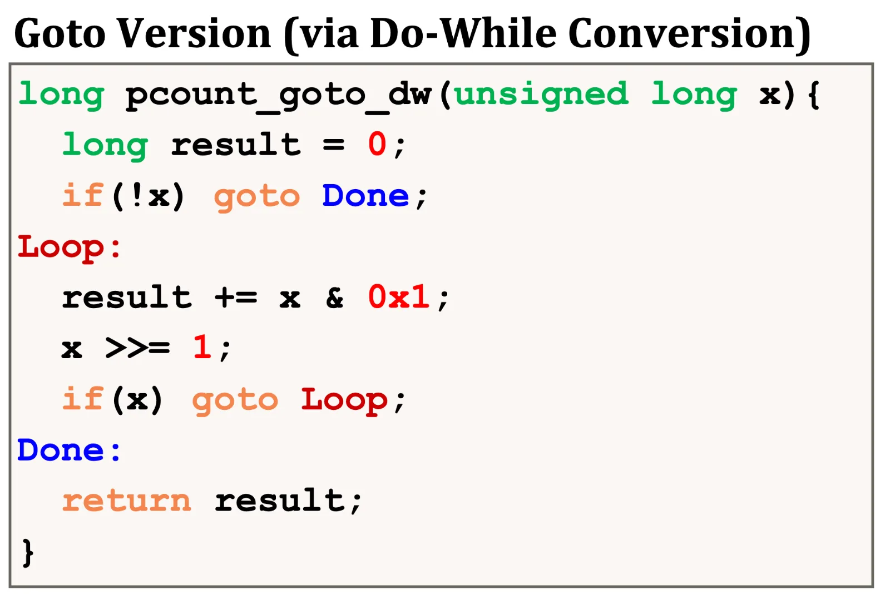
do-while 앞에 조건 검사(guard)를 하나 붙인 형태 → 처음부터 거짓이면 Done으로 바로 빠짐
왜 -O1은 이 방식을 쓰는가
for의 세 부분 : init, test, update
init; while (test) { body; update; } 와 완전히 동일컴파일 순서 : for → while → do-while 변환 → goto (어셈블리 구조 그대로)
예제 pcount_for : WSIZE = 8*sizeof(long) = 64
(x >> i) & 0x1 → i번째 비트가 1인지 확인해 result에 더함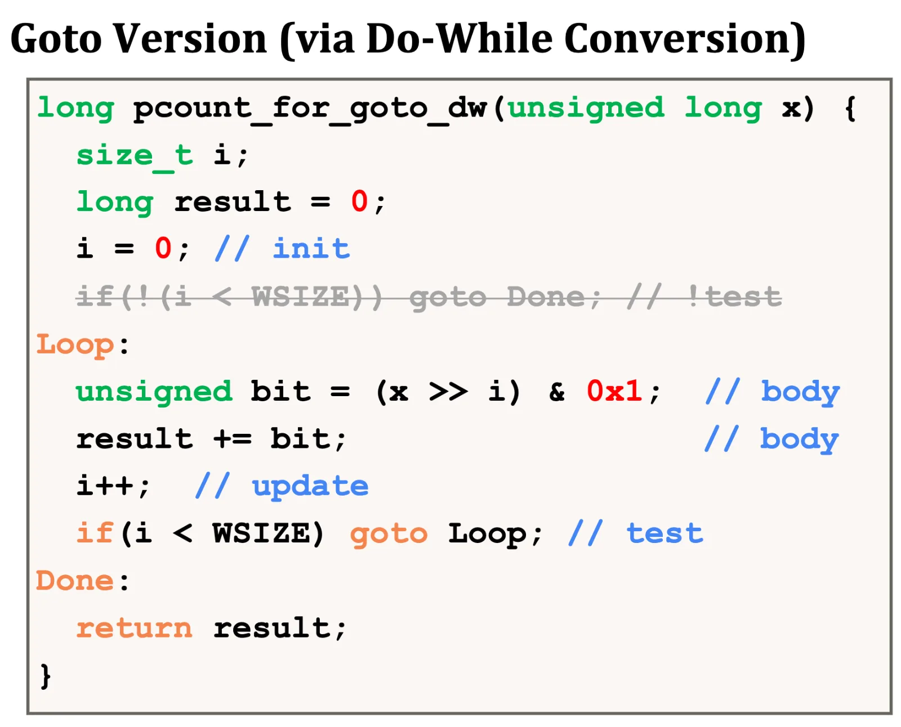
-O1에서는 처음 guard if (!(i < WSIZE)) goto Done; 가 사라짐
long switch_eg(long x, long y, long z) {
long w = 1;
switch (x) {
case 1: w = y*z; break;
case 2: w = y/z; // fall through
case 3: w += z; break;
case 5:
case 6: w -= z; break;
default: w = 2;
}
return w;
}여러 case label : case 5, 6이 같은 코드 실행 (특수한 fall through)
fall through : case 2는 break가 없어 case 3까지 실행
빠진 case : 4, 그리고 7 이상은 전부 default
if-else를 중첩해서 같은 동작을 만들 수 있지만, switch는 jump table로 다르게 처리함
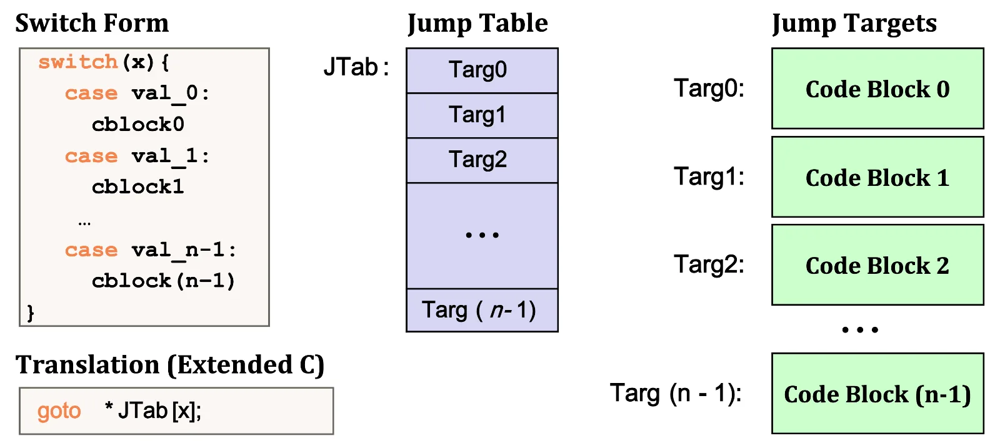
각 case 코드 블록의 시작 위치에 label(Targ0, Targ1 …)을 붙임
jump table : 그 label들의 주소를 담은 배열 (array of target address)
goto *JTab[x]; → x로 테이블을 한 번 조회해 바로 해당 블록으로 점프, 조건을 하나씩 비교할 필요 없음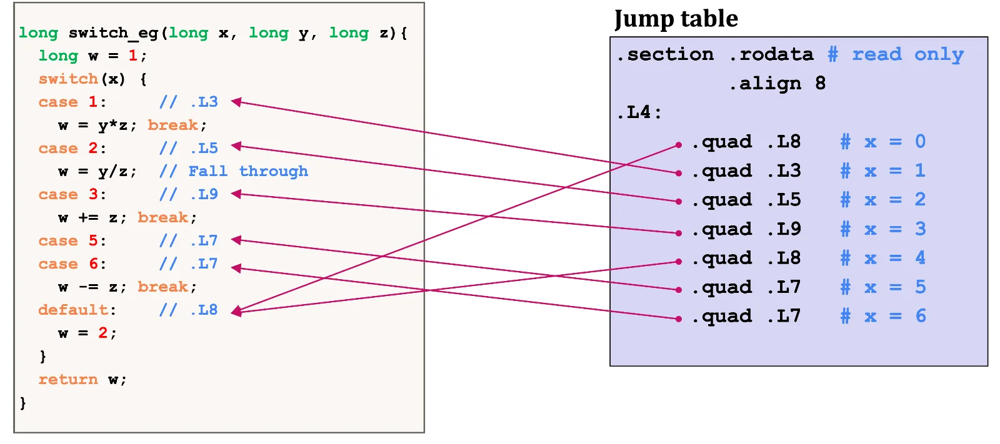
.section .rodata → 읽기 전용 영역, .L4가 테이블 시작 주소
.quad → 엔트리 하나가 8바이트 주소 (주소는 64bit)
direct : jmp .L8 → label 이름을 알고 그 위치로 바로 점프
indirect : jmp *.L4(,%rdi,8) → 메모리에 저장된 주소를 읽어 와서 그곳으로 점프
*는 포인터 역참조처럼 "이 주소에 들어 있는 값으로 가라"는 뜻테이블에 저장된 것은 "L3"라는 문자열이 아니라 그 label의 실제 메모리 주소
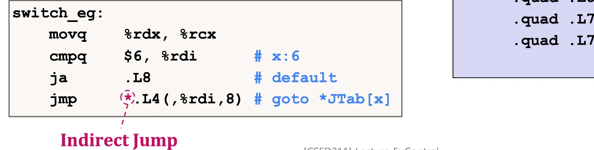
movq %rdx, %rcx → z를 %rcx로 복사
cmpq $6, %rdi; ja .L8 → x > 6이면 default로
jmp *.L4(,%rdi,8) → 나머지는 jump table로 indirect jump
w = 1 초기화가 여기 없음
.L3:
movq %rsi, %rax # ret = y
imulq %rdx, %rax # ret *= z
retbreak → 함수 끝이므로 그냥 ret
C로 풀면 case 2는 w = y/z; goto Merge;, case 3은 w = 1; Merge: w += z;
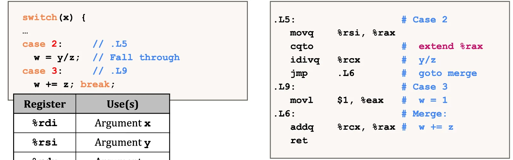
.L5 (case 2) : y/z를 계산하고 jmp .L6 (merge)로 case 3의 w += z 부분에 합류
.L9 (case 3) : movl $1, %eax로 w = 1을 여기서 초기화한 뒤 .L6으로 흘러감
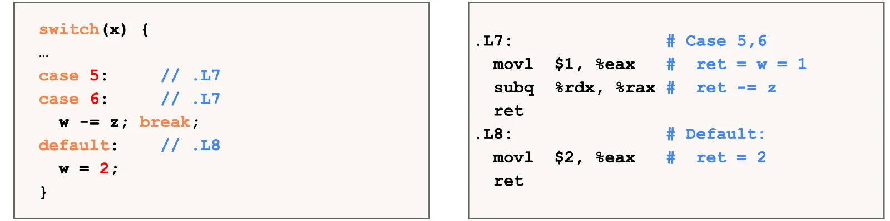
.L7 (case 5, 6) : w = 1 초기화 후 w −= z, 테이블에서 x=5, x=6 엔트리가 둘 다 .L7을 가리킴
.L8 (default) : w = 2
C의 for, switch 같은 문법은 사람이 읽기 쉽지만, 어셈블리에는 그런 문법이 없음 → 기본 명령어 + 조건 코드 + 다양한 점프로 구현
jump table은 위험한 기법이 아니라 효율적이고 필수적인 기법
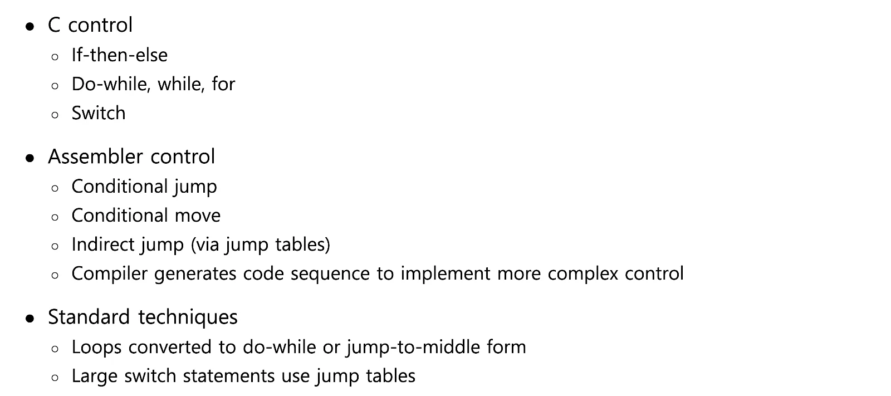
뺄셈의 CF = borrow 여부 : 실제 carry out이 없으면 CF = 1 (unsigned로 a < b)
jl/setl 조건은 SF ^ OF : 가장 작은 음수에서 빼서 overflow가 나도 대소 판정이 맞음
setX는 최하위 1바이트만 씀 → movzbl로 상위를 0으로 만들어야 함, 32bit 목적지 명령은 상위 32bit를 자동으로 0으로
cmp b, a는 a − b, test b, a는 a & b, 둘 다 결과를 저장하지 않음
-fno-if-conversion은 cmov 대신 분기로 남기라는 옵션
cmov는 then/else를 둘 다 계산 → 비싼 계산, null 역참조, 부작용 있는 식에는 못 씀
분기가 비싼 이유 : 파이프라인에 미리 넣은 명령을 버려야 함
while 변환 : -Og는 jump-to-middle, -O1은 do-while conversion (guard + do-while)
for는 init / while(test) \{ body; update; \} 로 바꾼 뒤 같은 방식으로 컴파일, 처음 guard는 상수 비교면 제거됨
jump table : 엔트리 8바이트, jmp *.L4(,%rdi,8) = .L4 + 8x 주소의 값을 읽어 점프
cmpq $6 + ja 한 번으로 x > 6과 음수 x를 모두 default로 보냄 (unsigned 비교)
빠진 case 값은 테이블에서 default label을 가리킴, 같은 코드의 case는 같은 label을 가리킴
fall through는 jmp로 다음 case의 중간(merge)에 합류하는 방식
w = 1 같은 초기화는 그 값이 필요한 case 안으로 옮겨질 수 있음
%rdi = −1, %rsi = 1일 때 cmpq %rsi, %rdi 직후 jl, jb, ja 중 점프하는 것은?
−1 − 1 = −2 → SF = 1, OF = 0, unsigned로 FFFF…FFFF ≥ 1이라 CF = 0, ZF = 0
jl : SF ^ OF = 1 → 점프 (signed로 −1 < 1)
jb : CF = 0 → 점프 안 함
ja : ~CF & ~ZF = 1 → 점프 (unsigned로 FFFF…FFFF > 1)
switch_eg(2, 7, 2)와 switch_eg(−1, 7, 2)의 반환값과 거쳐 가는 label은?
x = 2 : jmp *.L4(,%rdi,8) → .L5, w = 7/2 = 3, jmp .L6에서 w += 2 → 5
x = −1 : cmpq $6 후 ja가 unsigned 비교라 −1 = FFFF…FFFF > 6 → .L8 (default) → 2
다음 중 컴파일러가 cmov로 바꾸면 안 되는 것과 이유는?
val = x > y ? x - y : y - x;val = p ? *p : 0;val = x > 0 ? x *= 7 : x += 3;① 괜찮음 : 둘 다 가벼운 뺄셈
② 안 됨 : p가 null이어도 *p를 계산해 null pointer 역참조
③ 안 됨 : 두 식이 다 실행되어 x가 두 번 바뀜 (부작용)
while (x) { result += x & 1; x >>= 1; } 를 jump-to-middle과 do-while conversion 두 가지 goto 형태로 쓰고, x가 0이 아닐 때 첫 body 전까지 실제로 일어나는 점프 횟수를 비교하라.
jump-to-middle : goto Test; Loop: body; Test: if (x) goto Loop;
do-while conversion : if (!x) goto Done; Loop: body; if (x) goto Loop; Done:
x ≠ 0일 때 jump-to-middle은 Test로 1번, Loop로 1번 → 2번
do-while conversion은 guard가 거짓이라 점프 없이 바로 body → 0번
case가 0, 1, 2, 3, 1000뿐인 switch는 jump table로 만들기에 적합한가?
적합하지 않음 : 테이블이 x 값으로 인덱싱되므로 1000까지 엔트리(8바이트씩)가 필요하고 대부분 default
슬라이드 요약대로 sparse한 switch는 if-elseif 형태의 decision tree로 컴파일될 수 있음